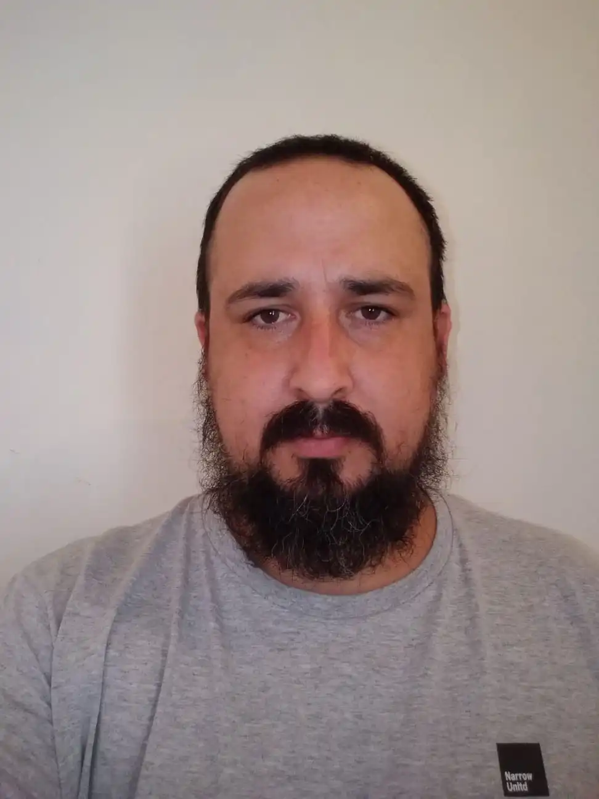
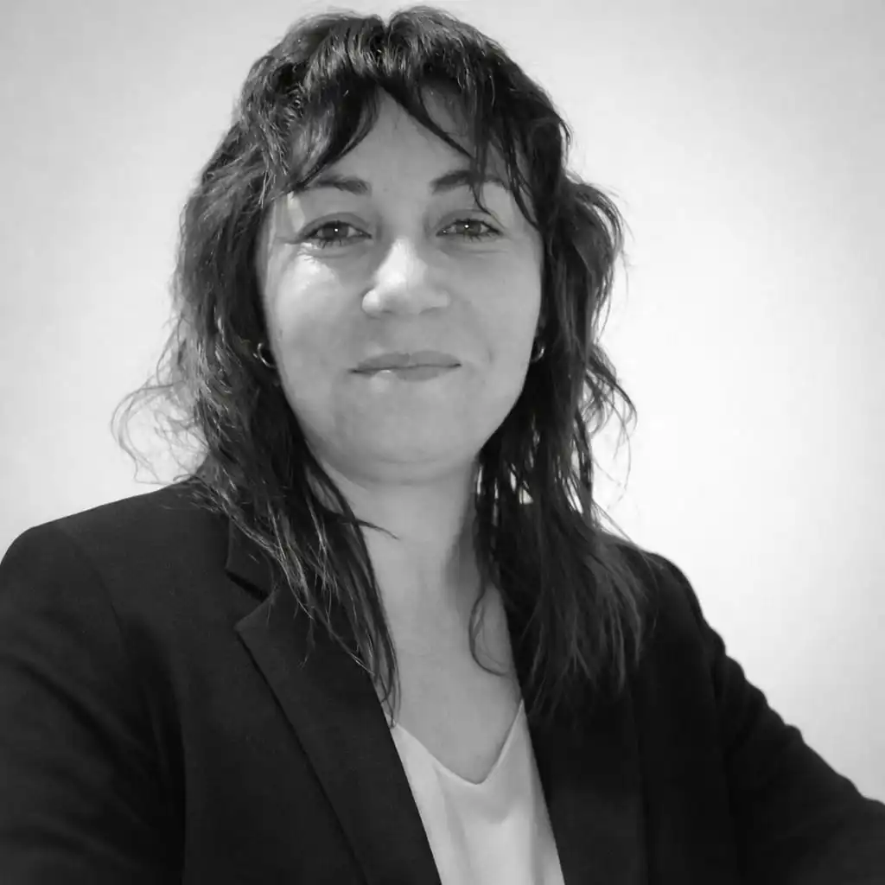
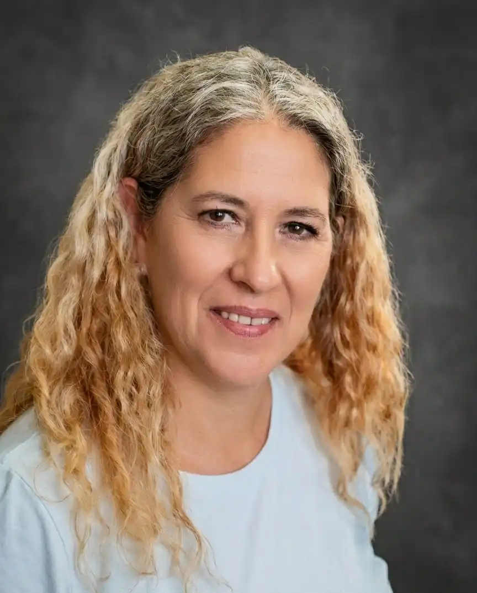

Reencontrarse; a una mejor
calidad de vida
En nuestro centro integral Grupo Reencuentro abordamos los consumos problemáticos desde una mirada empática y humana. Somos un equipo de profesionales de la salud mental psicólogos, psicólogos sociales y operadores socioterapéuticos que nos unimos en respuesta a la creciente necesidad de espacios de recuperación. Así nace nuestra propuesta: un lugar donde combinamos intervenciones psicosociales y comunitarias bajo un mismo techo.
Ofrecemos un tratamiento ambulatorio que brinda un entorno seguro y estructurado, junto con acompañamiento constante a través de terapias individuales y grupales. Creamos un espacio cálido de contención comunitaria, donde cada persona recibe un acompañamiento integral y respetuoso en su proceso de recuperación.
OBJETIVOSGrupo Reencuentro Un espacio donde cada voz es escuchada y cada proceso es respetado, acompañado y sostenido.
Talleres como eje para la recuperación de adicciones
Nos enfocamos en conectar con cada persona, acompañando que de manera natural y auténtica descubra su propio camino para reencontrarse con su familia, su trabajo y su mundo interior.
Grupo de familiares
Nuestro enfoque prioriza la reconstrucción de los vínculos, reconociendo que la recuperación también se sostiene en el entorno. Trabajamos con la familia como aliada, fomentando comunicación saludable y sanación mutua. Contar con redes de apoyo sólidas reduce las recaídas y fortalece el proceso.
Educación Física
Actividades aeróbicas, ejercicios de fuerza, coordinación y movilidad diseñados para mejorar el estado físico general. Este espacio busca fortalecer el cuerpo, liberar tensiones y promover hábitos saludables a través de dinámicas deportivas y recreativas que acompañan el proceso de recuperación.
Meditación
Prácticas guiadas de respiración y atención plena que ayudan a reducir el estrés, mejorar el enfoque y regular las emociones. La meditación se integra como una herramienta clave dentro de la rehabilitación, favoreciendo la claridad mental y el bienestar necesario para sostener los objetivos personales.
Grupo Autoayuda
Espacio centrado en el “aquí y ahora”, donde los participantes trabajan sus conductas y emociones acompañados por personas que atraviesan experiencias similares. El eje es la ayuda mutua, el apoyo emocional y la contención entre pares, promoviendo un ambiente seguro para expresarse y avanzar en el proceso personal.
Grupo Terapéutico
Coordinado por un profesional de la salud mental, este espacio ofrece herramientas clínicas y técnicas estructuradas para identificar, comprender y transformar comportamientos. A través del trabajo grupal se abordan emociones, vínculos y patrones aprendidos, permitiendo adquirir recursos personales y fortalecer el proceso de recuperación.
Grupo Talleres
Los talleres terapéuticos son espacios grupales guiados por profesionales donde se utilizan actividades artísticas, creativas, corporales o psicoeducativas para promover bienestar. Funcionan como un entorno dinámico que facilita la expresión, el aprendizaje y el desarrollo de habilidades que fortalecen la salud emocional y el proceso de rehabilitación.
¿Necesitás orientación para empezar tu camino de recuperación?
Contáctanos
Mauro Rollhaiser
Fundador · Director
- Presidente de la asociacion civil de psicologos sociales del Tercer Sector
- Director de escuela de psicologia social tercer sector
- Cordinador de centro barrial luis moyano
- Psicologo Social
- Operador socio terapeutico en consumos problematicos

Marcela Pael
Co-Fundadora · Directora
- Psicóloga Social
- Operadora socio terapeutico en Tercer Sector
- Operadora y cordinadora en consumos problemáticos
- Operador Socio Terapéutico
- Estudiante de trabajo social en la universidad - UNPAZ

Ruth German
Co-Fundadora · Directora
- Psicóloga Social
- Operadora socio terapeutico en Tercer Sector
- Operadora socio comunitaria en escuela Taller fatima
- Operador Socio Terapéutico
- Psicodramatista

Romina Ibarra
Co-Fundadora · Directora
- Psicóloga Social
- Operadora socio terapeutico en Tercer Sector
- Operadora socio comunitaria en escuela Taller fatima
- Operador Socio Terapéutico
- Psicodramatista
Preguntas Frecuentes
Atendemos de lunes a viernes, de 9:00 a 12:00 hs.
No es necesario contar con una derivación médica. Solo solicitamos que la persona se acerque al grupo acompañada por un referente responsable.
Sí. Contamos con encuentros grupales para las familias cada 15 días.
El proceso tiene una duración inicial de 6 meses. Al finalizar, se realiza una evaluación interdisciplinaria para definir si corresponde otorgar el alta o continuar con una extensión del tratamiento.
Sí, contamos con talleres de meditación y educación física, entre otros.
El primer paso es acercarse al centro para realizar una breve entrevista de admisión.
Contactanos
Envianos un mensaje
Información de Contacto
+115333333
test@test.com.ar
Los troncos del talar, Tigre, Buenos Aires